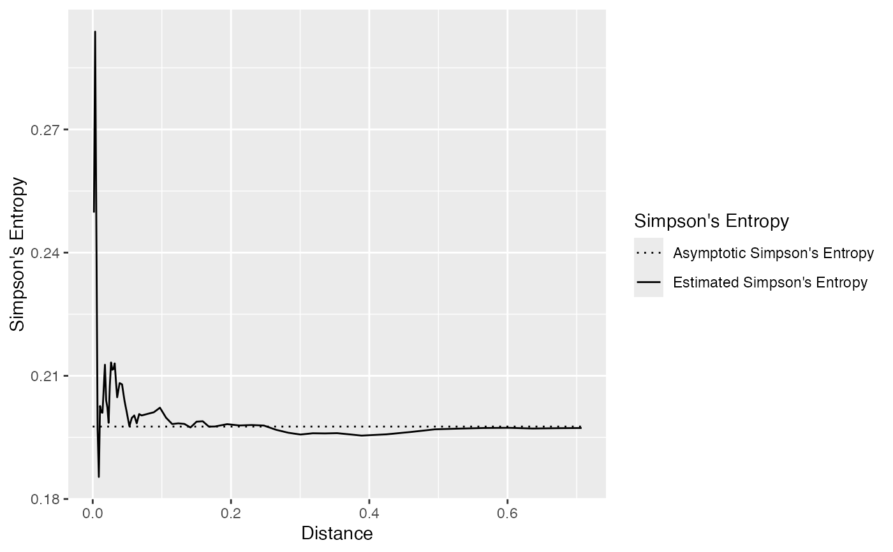

Simpson's entropy of the neighborhood of individuals, up to a distance (Shimatani 2001) .
Usage
ent_sp_simpson(
X,
r = NULL,
correction = c("isotropic", "translate", "none"),
check_arguments = TRUE
)
ent_sp_simpsonEnvelope(
X,
r = NULL,
n_simulations = 100,
alpha = 0.05,
correction = c("isotropic", "translate", "none"),
h0 = c("RandomPosition", "RandomLabeling"),
global = FALSE,
check_arguments = TRUE
)Arguments
- X
a spatialized community (A dbmss::wmppp object with
PointTypevalues as species names.)- r
a vector of distances.
- correction
the edge-effect correction to apply when estimating the number of neighbors or the K function with spatstat.explore::Kest. Default is "isotropic".
- check_arguments
if
TRUE, the function arguments are verified. Should be set toFALSEto save time when the arguments have been checked elsewhere.- n_simulations
the number of simulations used to estimate the confidence envelope.
- alpha
the risk level, 5% by default.
- h0
A string describing the null hypothesis to simulate. The null hypothesis may be "RandomPosition": points are drawn in a Poisson process (default) or "RandomLabeling": randomizes point types, keeping locations unchanged.
- global
if
TRUE, a global envelope sensu (Duranton and Overman 2005) is calculated.
Value
ent_sp_simpson returns an object of class fv,
see spatstat.explore::fv.object.
There are methods to print and plot this class.
It contains the value of the spatially explicit Simpson's entropy
for each distance in r.
ent_sp_simpsonEnvelope returns an envelope object spatstat.explore::envelope.
There are methods to print and plot this class.
It contains the observed value of the function,
its average simulated value and the confidence envelope.
References
Duranton G, Overman HG (2005).
“Testing for Localisation Using Micro-Geographic Data.”
Review of Economic Studies, 72(4), 1077–1106.
doi:10.1111/0034-6527.00362
.
Shimatani K (2001).
“Multivariate Point Processes and Spatial Variation of Species Diversity.”
Forest Ecology and Management, 142(1-3), 215–229.
doi:10.1016/s0378-1127(00)00352-2
.
Examples
# Generate a random community
X <- rspcommunity(1, size = 1000, species_number = 3)
# Calculate the entropy and plot it
autoplot(ent_sp_simpson(X))

# Generate a random community
X <- rspcommunity(1, size = 100, species_number = 3)
# Calculate the entropy and plot it
autoplot(ent_sp_simpsonEnvelope(X, n_simulations = 10))
#> Generating 10 simulations by evaluating expression ...
#> 1, 2, 3, 4, 5, 6, 7, 8, 9,
#> 10.
#>
#> Done.
#> Warning: Removed 8 rows containing missing values or values outside the scale range
#> (`geom_ribbon()`).